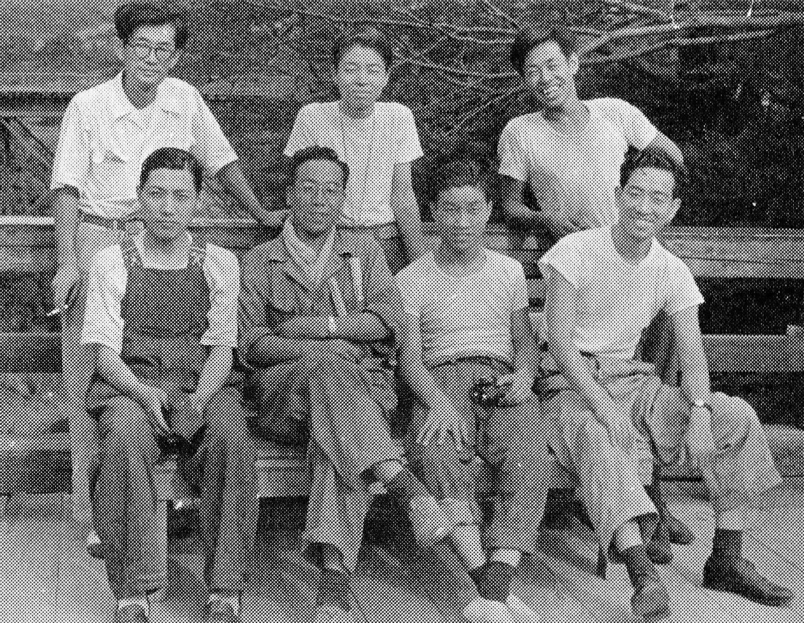

Ing. Shinichiro Sakurai
The creator of an automotive legend

Here's a time line of Ing. Shinichiro Sakurai 's life:
- April 1954 - The Prince Motor Company was merged with the Fuji Precision Industries. (The name Prince Motor Company disappeared in the meantime.) The senior design manager was Ryoichi Nakagawa.
- February 1961 - The Fuji Precision Industries changed its name to the Prince Motor Company. (The name "Prince Motor Company" revived.)
- September 1963 - The assistant manager of the vehicle development group No. 1 of the passenger car department.
- June 1965 - The assistant manager of the vehicle development group No. 2 of the vehicle technology department No. 1.
- August 1966 - The Prince Motor Company was merged into the Nissan Motor Company. Assigned as the assistant manager of the vehicle development group No. 2, the vehicle technology department No. 1, the Prince division, the Nissan Motor Company.
- January 1968 - The manager of the vehicle development group No. 2 of the design department No. 4.
- January 1970 - The manager of the vehicle development group No. 8 of the design department No. 4.
- January 1971 - Attached to the vehicle development department No. 3.
- February 1974 - The chief vehicle coordinator of the vehicle development department No. 3.
- February 1976 - The deputy manager of the vehicle development department No. 3.
- January 1979 - The chief vehicle coordinator of the product developmentment office.
- January 1980 - The senior manager and the chief vehicle coordinator of the product developmentment office.
- February 1984 - The senior manager of the vehicle developmentment control department, the product developmentment office.
- January 1986 - The senior manager of the technical vehicle design department.
- October 1986 - The president of the Autech.
- April 1989 - The part-time instructor of the Osaka Sangyo University.
- December 1994 - The president of the S&S Engineering.
- October 1995 - The part-time instructor of the Tokai University.
- May 2005 - Inducted to the Japan Automotive Hall of Fame.
- August 2006 - The chairman of the S&S Holdings.
- October 2008 - The chairman of the Lenz Environmental Resources.
- July 2010 - The chairman of the S&S Engineering.
- January 17, 2011 - Died in Setagaya, Tokyo.
"During my Prince, years, I learned what the Prince Motors spirit is from many people. Especially from Mr. Jiro Tanaka, who supervised the Prince Engineering Department, and from Mr. Shinichiro Sakurai>, who was my direct boss."
"Sakurai-san was examining me if I could overcome any kinds of difficulties he assigns. I heard that a lion parent kicks the children down into the abyss of a ravine, and brings up the kids who can climb up. The “Sakurai School” was just like a “Lion School"
-- Words from Naganori Ito, one of Sakurai's apprentices.